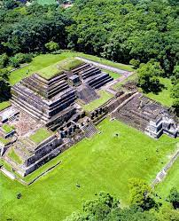

Lago de Coatepeque
Ubicado en el departamento de Santa Ana, este lago de origen volcánico es uno de los destinos más visitados del país. Es famoso por sus aguas turquesas y por ser un lugar ideal para nadar, hacer kayak o simplemente disfrutar del paisaje.

Playa El Tunco
Esta playa se encuentra en La Libertad y es reconocida mundialmente por su ambiente relajado y sus olas perfectas para el surf. Además, ofrece una vibrante vida nocturna y una comunidad internacional de viajeros.

Ruinas de Tazumal
Situadas en Chalchuapa, Santa Ana, estas ruinas son el sitio arqueológico más importante de El Salvador. Pertenecen a la civilización maya y muestran la grandeza arquitectónica de los antiguos habitantes de la región.